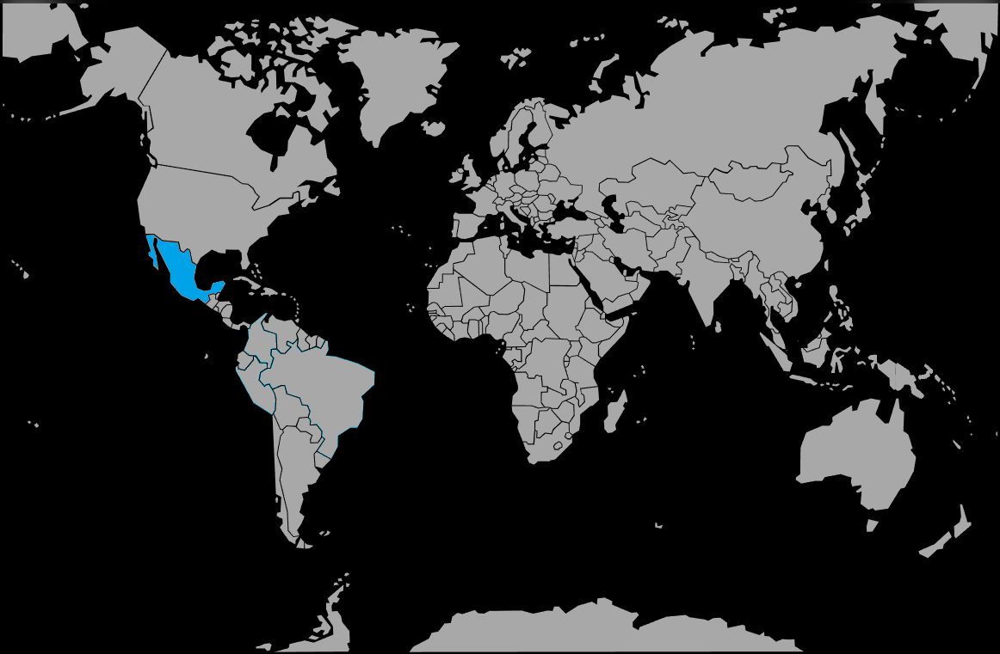

Systématique
- Ordre : Cichliformes
- Famille : Cichlidae
- Genre : Herichthys
- Espèce : Herichthys carpintis
Herichthys carpintis est un grand cichlidé d’Amérique centrale au corps trapu et à la robe couverte de taches claires, donnant un aspect « perlé » très caractéristique.
En aquarium, il peut atteindre 18–22 cm, voire un peu plus pour les mâles, et développe un comportement fortement territorial, surtout en couple et en période de reproduction.
Herichthys carpintis occupe surtout la zone médiane et basse du bac, où il explore le décor rocheux et défend des territoires bien marqués; les mâles dominants peuvent se montrer très agressifs envers les congénères et autres grands cichlidés si l’espace est insuffisant.
La maintenance est plus sûre en couple formé ou en groupe dans de très grands volumes, avec de nombreuses caches minérales et des lignes de vue brisées; éviter les colocataires trop calmes ou de petite taille qui seraient stressés ou blessés.
Mode : ponte sur substrat découvert (pierre, racine, vitre); les parents nettoient une surface, la femelle y dépose les œufs et les deux adultes assurent une garde serrée des œufs puis des alevins.
Pendant la reproduction, l’agressivité augmente fortement et le couple peut repousser violemment tous les autres poissons; un bac spécifique ou un très grand aquarium bien structuré est alors recommandé.
Dimorphisme sexuel : mâles plus massifs, avec nageoires dorsale et anale plus pointues et une coloration plus contrastée; femelles légèrement plus petites et plus arrondies, surtout au niveau du ventre.
Biotope : rivières, zones peu profondes, bras morts et lagunes du nord‑est du Mexique, avec substrat pierreux ou rocailleux, courant modéré et eau généralement claire à légèrement trouble.
Répartition
Origine naturelle :
- Nord‑est du Mexique, notamment les bassins des rivières Pánuco et Soto La Marina et les systèmes côtiers associés.
- Présent dans des rivières, lacs et retenues, parfois en zones légèrement saumâtres proches des estuaires.
Il fréquente des zones lentes à courant modéré, avec substrat rocheux, amas de pierres et caches minérales multiples.
Paramètres de maintenance
Température : 23 à 26 °C (tolérance approximative 22–28 °C).
pH : 7,0 à 8,0, eau neutre à alcaline.
GH : 8 à 20 °dGH, eau moyennement dure à dure.
Courant : modéré, avec filtration puissante et bonne oxygénation, adaptée à un gros cichlidé pollueur.
Volume conseillé : au minimum 400–500 L pour un couple, avec décor rocheux solide et lignes de vue brisées.
Régime alimentaire
Régime : omnivore à nette tendance carnivore; accepte granulés et sticks pour cichlidés, complétés par nourriture congelée et vivante (moules, crevettes, vers, insectes), ainsi qu’une petite part végétale.
Une alimentation variée et distribuée avec modération, associée à de gros changements d’eau réguliers, aide à limiter les problèmes digestifs et le surpoids chez ce cichlidé massif.